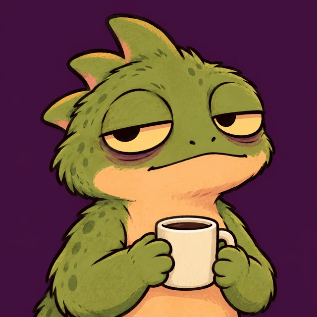
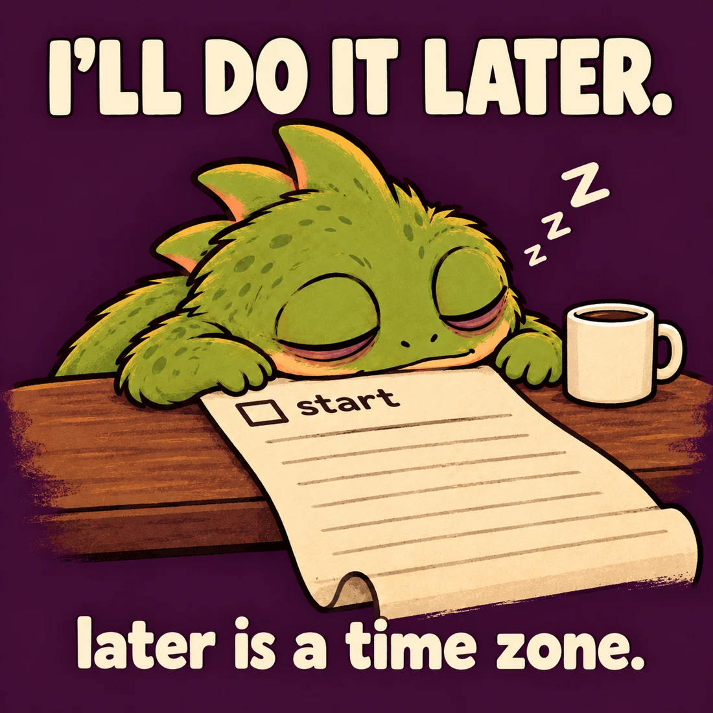
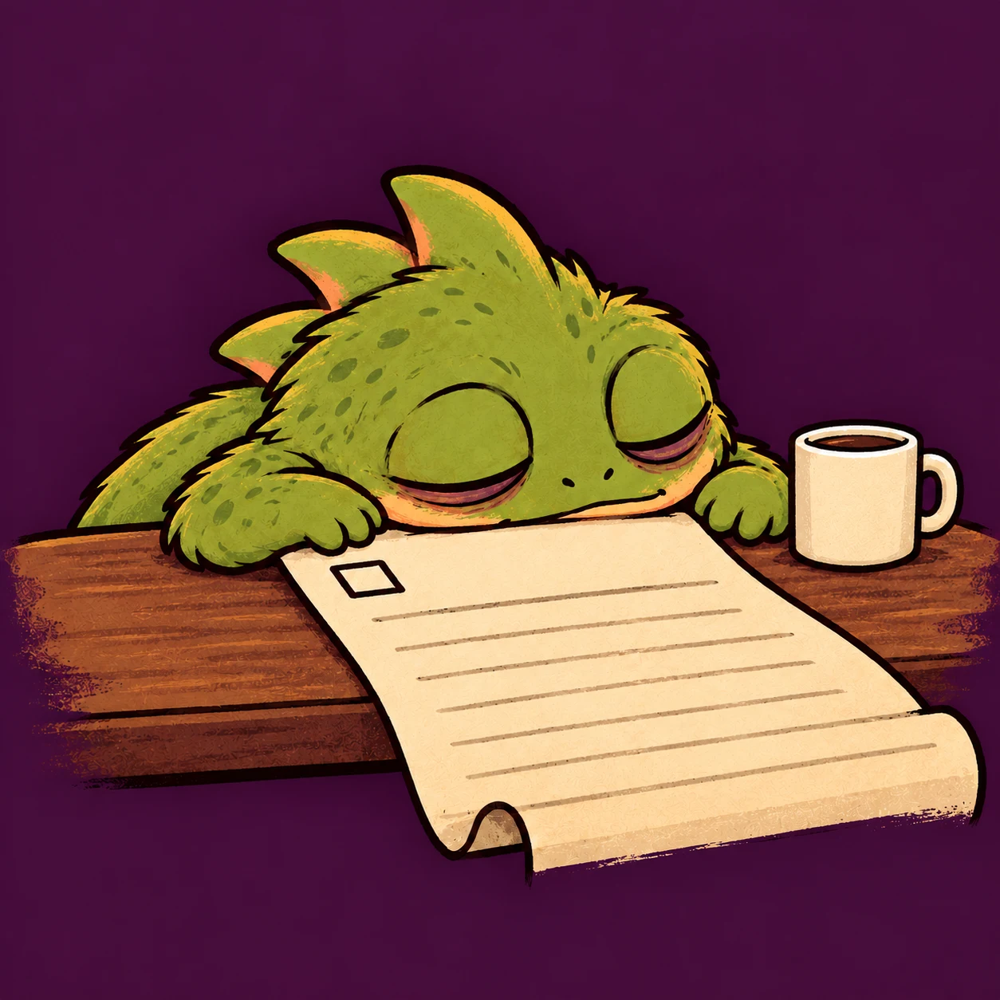

CURRENTLY PUTTING IT OFF
AN ORIGINAL, VERY SLEEPY BASILISK.
later is
a time
zone.
One tiny basilisk. One cold coffee.
Absolutely no sense of urgency.

big plans.small nap.
do not disturb. or do. same outcome.
Original character. Free templates. No token launched.
SCROLL, WHENEVERA mythical
creature.
A familiar
problem.
Most basilisks turn you to stone.
This one turns your deadline
into a suggestion.
Meet Snoozelisk. Moss-green, half asleep, and quietly convinced that tomorrow has more hours in it.
Basilisk, technically. Gecko, emotionally. His superpower? Putting everything off. His to-do list? Exactly one item.
start.
rescheduled from yesterdayAlmost
productive.
A little too relatable?
That sounds like tomorrow's problem.


Original artwork, endlessly reusable excuses. The example above is ours. Your version goes next.
Make it
your problem.
What's the one thing you're putting off?
Give it a caption. We'll supply the basilisk.
Loading the sleepy one…
No login. No image uploads. Your caption is drawn in this browser and stays here until you download or share it.
Made with approximately one eye open.
04 / A NOTE FROM TOMORROW
“I'll get
to it.”
— Snoozelisk, since yesterday.
Fifteen seconds in the later time zone.
A little moving postcard from the original artwork.
SILENT ART MONTAGE / 00:15 / TAKE YOUR TIME
Start a very
slow movement.
Follow @snoozelisk on X, opens a new tab- 01
Borrow the sleepy one.
Use the maker or download the original blank template.
Get the blank PNG ↓ - 02
Add your one thing.
Chores. Work. That reply you've mentally sent twelve times.
Open the maker ↗ - 03
Pass the excuse on.
Share your version wherever you hang out. On X, tag @snoozelisk so we can see it.
Find us on X ↗, opens a new tab

Making and downloading need no account. Sharing on X is optional and uses your own account. We ask before featuring your work.
Just a lizard.
And a bit.
No token launched.
No contract address yet.
An original character and meme project, still in its early days. We're making things, trying jokes, and seeing what people enjoy.
Read the introduction on X ↗, opens a new tabWhat exactly is a Snoozelisk?
A newly created sleepy basilisk with one superpower: postponing everything until tomorrow. Original artwork, everyday procrastination, and open meme templates.
Is there a token or contract address?
No. No token has been launched and no contract address exists for this project. This site has no wallet connection, token sale, or price chart. There is no promised launch date.
What about “SNZL”?
SNZL is only a possible ticker idea. It does not identify a launched Snoozelisk token. A name or ticker alone is never an official project announcement.
Can I use the template?
Yes, make and share your own Snoozelisk memes with these templates. Credit @snoozelisk and don't imply official endorsement. For commercial use, contact the project through the official X account first.
Does the maker upload my caption?
No. The maker draws the image locally in your browser. There is no login, upload endpoint, or analytics script. Only downloading creates a file on your device. The hosting platform may process operational access data.
Where are the official updates?
On @snoozelisk on X, opens a new tab. We don't announce updates through unsolicited DMs. This page makes no claims about popularity, partnerships, or future returns.